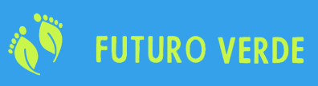
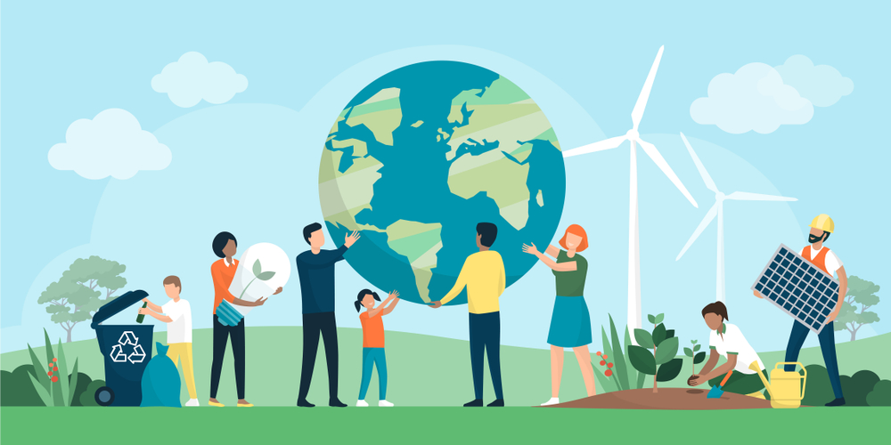

Home
Projetos
Parcerias
Sobre Nós
Voluntarios
Login
Alfredo Marcondes

Caros cidadãos de Alfredo Marcondes, hoje gostaria de compartilhar com vocês um projeto inovador que está sendo desenvolvido em nossa cidade: o Projeto Futuro Verde, uma iniciativa da ONG local que leva o mesmo nome. Este projeto visa promover a conscientização ambiental e implementar ações práticas para a preservação do meio ambiente em nossa querida cidade.
A ONG Futuro Verde é composta por um grupo de pessoas apaixonadas pela natureza e engajadas em construir um futuro mais sustentável para todos. Essa equipe dedicada tem desenvolvido uma série de atividades e projetos em nossa comunidade, buscando educar, inspirar e envolver todos os cidadãos em prol do meio ambiente.
Uma das ações fundamentais do Projeto Futuro Verde é a promoção de campanhas de conscientização ambiental. Por meio de palestras, workshops e eventos comunitários, eles buscam disseminar conhecimentos sobre temas como reciclagem, economia de água e energia, preservação da fauna e flora, entre outros. Essas iniciativas visam despertar o senso de responsabilidade e a importância de cada indivíduo na proteção do meio ambiente.
Além disso, o Projeto Futuro Verde tem trabalhado em parceria com escolas locais, implementando programas de educação ambiental. As crianças são o futuro de nossa cidade e, ao educá-las sobre a importância da preservação ambiental desde cedo, estamos criando uma geração consciente e engajada em cuidar da natureza. São realizadas atividades práticas, como plantio de árvores, hortas escolares e visitas a áreas de preservação, para despertar o amor e o respeito pela natureza em nossos jovens.
Outro projeto notável é a criação de áreas verdes urbanas. O Projeto Futuro Verde tem liderado esforços para transformar espaços públicos ociosos em jardins e praças arborizadas. Além de embelezar a cidade, essas áreas proporcionam sombra, purificam o ar e servem como refúgio para a fauna local. Esses espaços verdes se tornam verdadeiros oásis no meio do concreto, incentivando a conexão da população com a natureza.